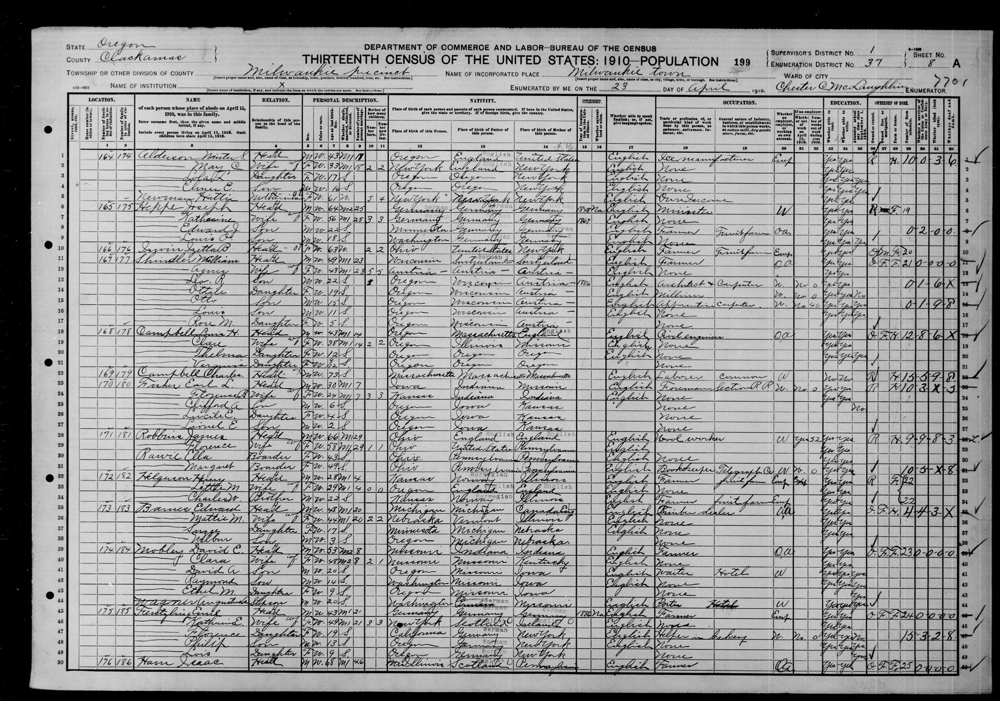

Carrie May Newman 1878–1970
Peter's great-grandmother by adoption.
Also recorded as Carrie Ann (2015 tree); May C. Alderson (1910 census); Carrie May Schroeder (1952).
Carrie May Newman was born on 24 May 1878 in Oak Orchard, United States (according to an online family tree)1, the daughter of Edward Newman and Harriet M Brate3. She married Winter Scott Alderson on 4 Sep 1892 in Gilliam, Oregon, United States (according to an online family tree)4. She died on 9 Aug 1970 in Lebanon, Oregon, United States (according to an online family tree)1 and was buried at Portland, Multnomah County, Oregon, United States (according to an online family tree)1.
Family
- Parents
- Edward Newman 1844–1909 and Harriet M Brate 1848–1924 tradition
- Husband
- Winter Scott Alderson 1866–1933 · married on 4 Sep 1892 in Gilliam, Oregon, United States
- Children
- Estella May Alderson 1916–2008 adoptive
- Lola Lucille Alderson b. 1893 documented
Life events
| Event | Date | Place and details |
|---|---|---|
| Born | 24 May 1878 | Oak Orchard, United States According to an online family tree1 |
| Lived | 1880 | Ash Rock, United States According to an online family tree1 |
| Lived | 1910 | Milwaukie, Clackamas County, Oregon, United States According to an online family tree1 |
| Note | 23 Apr 1910 | Milwaukie, Clackamas County, Oregon, United States 1910 census, ED 37, sheet 8A, lines 1–5. Winter S. (43) and May C. (33), married 18 years; she is 'mother of 2 children, 2 living'. The children are Lola L. (17, b. Oregon) and Elmer E. (14, b. Oregon), and Hattie Newman, mother-in-law, 61, lives with them. The same sheet lists a Barnes family…2 |
| Lived | 1920 | Portland, Multnomah County, Oregon, United States According to an online family tree1 |
| Lived | 1930 | Portland, Multnomah County, Oregon, United States According to an online family tree1 |
| Lived | 1935 | Portland, Multnomah County, Oregon, United States According to an online family tree1 |
| Lived | 1940 | Concord, Oregon, United States According to an online family tree1 |
| Lived | 1949 | United States According to an online family tree1 |
| Lived | 10 Apr 1950 | Concord, Oregon, United States According to an online family tree1 |
| Buried | 1970 | Portland, Multnomah County, Oregon, United States According to an online family tree1 |
| Died | 9 Aug 1970 | Lebanon, Oregon, United States According to an online family tree1 |
Records

Open questions
Sources
- FamilySearch Family Tree: Carrie May Newman (KGWM-KQ2).
- S-fs-MLY2-9PZ.
Alderson, Winter S. | Head | M W 43 M1 18 ... May C. | Wife | F W 33 M1 18 | 2 | 2 | New York
1910 census, ED 37, sheet 8A, lines 1–5. Winter S. (43) and May C. (33), married 18 years; she is 'mother of 2 children, 2 living'. The children are Lola L. (17, b. Oregon) and Elmer E. (14, b. Oregon), and Hattie Newman, mother-in-law, 61, lives with them. The same sheet lists a Barnes family (Edward, 48, b. Michigan; Mattie M., b. Nebraska), which is not linked to Irene.
- FamilySearch Family Tree: Carrie May Newman (KGWM-KQ2), parents.
- FamilySearch Family Tree: Winter Scott Alderson (L51K-5YQ).